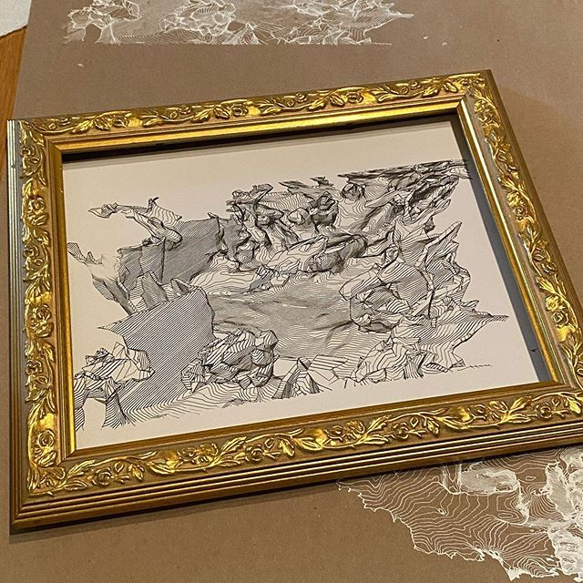

Research is what I call the projects which have not progressed to completed artworks. There are some, such as the Publishing Engine, which may never become a part of my art practice, and others such as Hexagons which are intended to test a personal theory.
Contour, not Meshes is an attempt to make clearer representations of scanned areas for copper plate printing.
Topography for Imagination considers replacing the glass in A Part of a Whole with a better representation of the landscape than a flat peice of textured glass.
Paths of Curiosity is a concept used for recording the exploration of abandoned spaces using GPS and environmental sensors. This information is used for making visual mnemonics for recollecting experiences afterwards..
Stacked Imagery reconsiders the viewpoint of traditional phtoography. Instead of the single vantage a photographer shares, what about a more comprehensive set whowing mulitple heights?
Showing Past Presence is a prelude to Reduced to a Rumour. When you kknow people inhabited or visited a space, how do you represent that fact without building a specific charicature?
Publishing Engine was an attempt to make it possible for everyone to create single-page magazines for tablet computers. Abandoned since 2015.
Hexagons, not Squares was an exploration in how hexagons might be more visually interesting than just grid renditions when scanning people for portraits.
Tracking Bodies
Experiments are what I refer to work that was informative for creative research but did not become a final body of work. These pieces are experimental and are part of the exploratory process towards a final art work or style of disemmnation.
Plotting and Printing An important part of Bankhead, Revisited was the copperr-plate prints made from wireframe meshes of scanned areas in the Upper Bankhead townsite. This experimental process of using contour lines, an Axidraw plotter and potential 3D printing is to explore ways of representing the landscape as it was visited.
These processes will be further refined and presented with the same conceptual basis as the copper plate prints: vantages of spaces that are presented as puzzles to be visually intriguing, to trigger the imagination of the viewer without as much information as a simple photograph would be.
Plotting a traditional wireframe mesh

Plotting a contour of a wreframe mesh
Experimenting with a 3D model of a scanned location